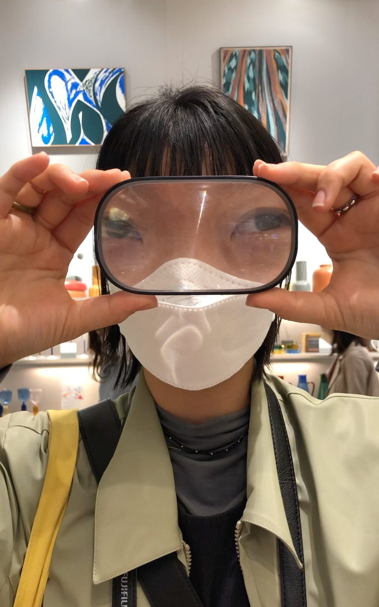

도희와 아름다운 가을 날씨의 도쿄. 여행의 주된 목적은 Tokyo Art Book Fair 관람.
두 시간 꽉 채워 '재밌게 잘 봤다'하고 나왔는데 알고 보니 북 페어 베뉴 지하에 우리가 본 면적만큼의 부스 공간이 남아 있었다.
Ebisu에 있는 Nadiff a/p/a/r/t 아트 북 서점 2층에는 작은 전시장이 있다. 서점이 끝날 때 즈음 나가기 직전에 전시장을 쓱- 한 번 보려고 올라갔다가
졸지에 전시 작가님과 지인 세 분만의 작은 파티에 합류하게 되었다. 안 되는 일본어에 손짓 발짓을 보태어 작가님의 멋진 아트에 대해 이야기를 나누었다.
